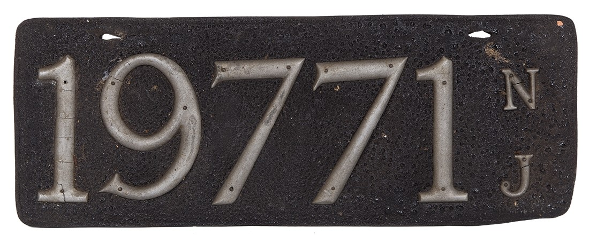
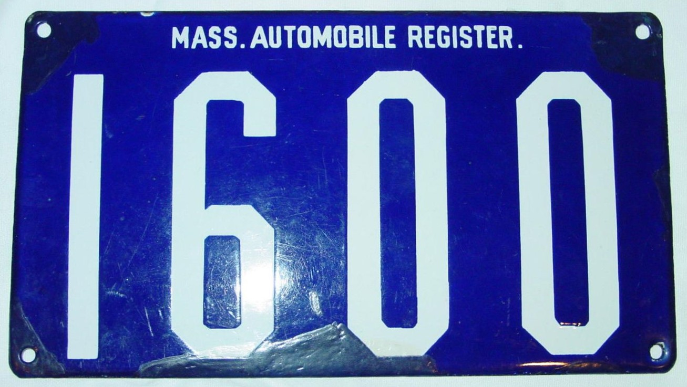
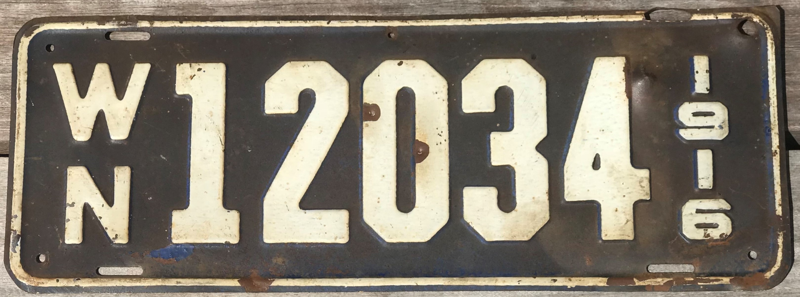
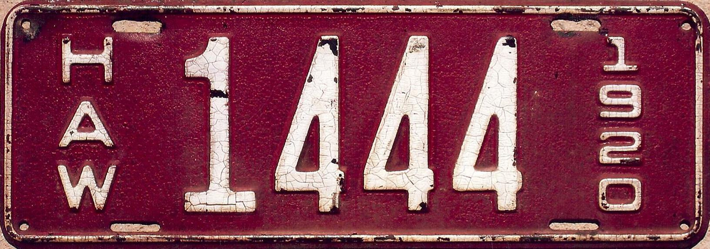
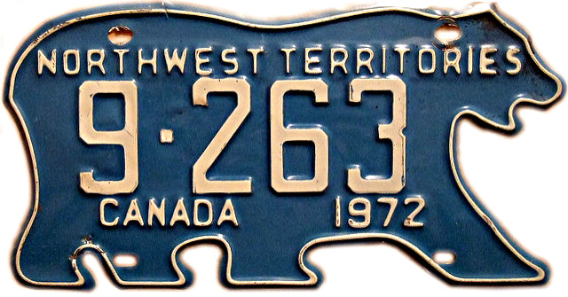
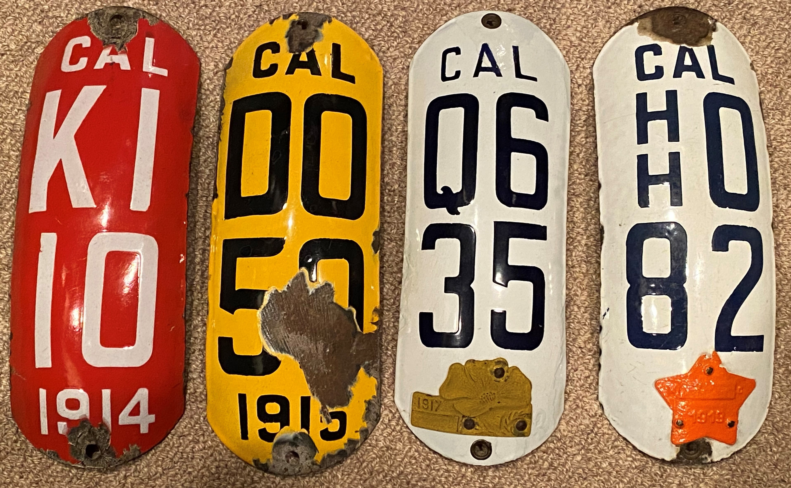

This page includes some notable license plates, whether it be due to rarity, age, material, or appearance. All information refers to plates from North America.
|  | Before states started issuing license plates, some would require motorists to make their own plates when registering vehicles. These plates could be made out of materials such as leather, and depending on the state, would display different letters of numbers, sometimes containing the owner's initials, other times showing a state-issued number. These plates are commonly called prestate plates. |
|  | First state-issued plate. Issued by Massachusetts in 1903. Many early plates from numerous states were made out of porcelain. Porcelain plates like are rare as they were very suseptible to rust. |
|  | First plates issued in Washington State in 1916. Plates issued in later years included two letters corresponding to county the car was registered to. Very few people own a collection of plates from all 39 counties. |
|  | Early Hawaiian license plates stand out as being exceptionally rare. Some years, such as 1917 and 1921, have no surviving plates today, with the only proof that they were even manufactured existing in old photos. |
|  | An abnormally shaped license plate from Canada. The Northwest Territories still uses polar bear-shaped license plates today, while most other provinces and states have opted for standard rectangle shapes, even if they originally were unique shapes. |
|  | While most motorcycle license plates are small rectangles, for a span of a few years, California opted for vertical plates. The tabs shown on the two white plates functioned similarly to today, displaying the expiration date. These could be changed taken out and changed to a newer expiration date, and can be seen on some regular car plates as well. |